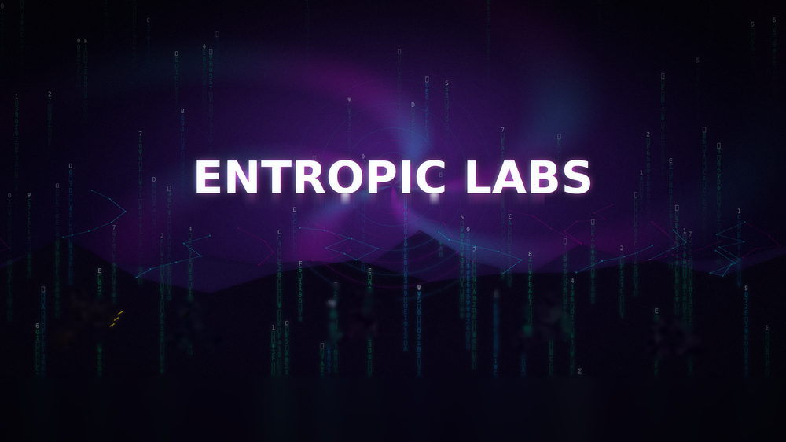
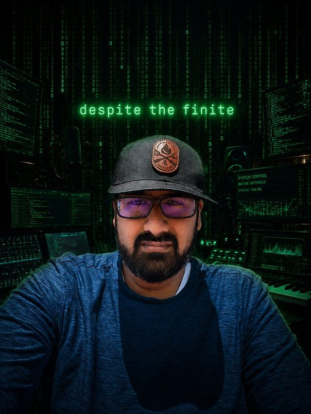
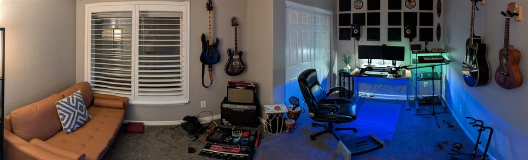

<title>Entropic Labs — Recording &amp; Production Studio</title>
<meta charset="utf-8">
<meta name="viewport" content="width=device-width, initial-scale=1">
<meta name="theme-color" content="#07050F">
<meta name="description" content="Entropic Labs — a recording and production studio run by Despite the Finite. Sessions by appointment.">
<link rel="canonical" href="../index.html">
<link rel="stylesheet" href="mobile.css">
<script>
  /* Being here means the mobile build is wanted: clear any pin set by ?full=1
     so this phone keeps landing here next time. */
  try{ localStorage.removeItem('el-view'); }catch(e){}
</script>

<header class="bar">
  <a class="bar-brand" href="index.html">ENTROPIC<span>·</span>LABS</a>
  <button class="menu-btn" type="button" id="menu-open" aria-expanded="false" aria-controls="menu">
    <span class="bars" aria-hidden="true"><i></i><i></i><i></i></span> Menu
  </button>
</header>

<nav class="menu" id="menu" aria-label="Sections">
  <div class="menu-top">
    <span class="menu-title">Entropic Labs</span>
    <button class="menu-close" type="button" id="menu-close" aria-label="Close menu">&times;</button>
  </div>
  <ol>
    <li><a href="#manifesto">The room</a></li>
    <li><a href="#producer">Producer</a></li>
    <li><a href="#studio">Studio</a></li>
    <li><a href="#gear">Gear</a></li>
    <li><a href="#sessions">Projects</a></li>
    <li><a href="games.html">Games</a></li>
    <li><a href="../observatory.html">Observatory</a></li>
    <li><a href="#contact">Book time</a></li>
  </ol>
  <p class="menu-foot">Sessions by appointment · Est. 2026</p>
</nav>

<main>
  <section class="hero" id="top">
    <h1 class="sr-only">Entropic Labs — Music Engineering / Studio</h1>
    <div class="hero-media">
      
      <span class="hero-aurora" aria-hidden="true"></span>
    </div>
    <div class="hero-content">
      <span class="eyebrow"><span class="rec-dot"></span> Session live · By appointment</span>
      <p class="hero-sub">Entropic Labs is a recording and production studio built on one idea: order emerges from noise if you listen long enough. Real amps, a pedalboard built over years, and a room tuned for patience and for accidents.</p>
      <div class="cta-stack">
        <a class="btn btn-solid" href="#contact">Book a session</a>
        <a class="btn btn-line" href="#gear">View the gear</a>
      </div>
    </div>
  </section>

  <section id="manifesto">
    <div class="section-head">
      <span class="section-index">01 / MANIFESTO</span>
      <h2>The room</h2>
    </div>
    <div class="body-copy">
      <p>Entropy is what happens to a signal left alone — pedals drift, amps breathe, a room has its own opinion whether you ask for one or not. We don't fight it, we mix with it. Guitars come straight off the wall, the pedalboard's been built up over years, and it all runs into a treated room and a proper monitoring setup — nothing simulated unless we choose to. We work across recording, mixing, and production, for songwriters, bands, and anyone building something track by track.</p>
    </div>
    <ul class="fact-list">
      <li><span>Est.</span><span>2026</span></li>
      <li><span>Location</span><span>Shared on request</span></li>
      <li><span>Room</span><span>Converted home studio</span></li>
      <li><span>Rig</span><span>Guitars, amps, pedalboard, DAW</span></li>
      <li><span>Booking</span><span>By appointment</span></li>
    </ul>
  </section>

  <section id="producer">
    <div class="section-head">
      <span class="section-index">02 / LEAD PRODUCER</span>
      <h2>Behind the board</h2>
    </div>
    <figure class="photo">
      
    </figure>
    <div class="body-copy" style="margin-top:1.4rem">
      <p>Entropic Labs is run by its lead producer and owner, recording and performing under the name <strong>Despite the Finite</strong>. The alias is the studio's whole philosophy in three words: everything starts as noise — a pedal drifting out of tune, a take that almost works — and gets shaped, patiently, into something that holds together anyway. That instinct runs through every session here, whether it's tracking a full band or programming a single bar of a beat.</p>
    </div>
    <ul class="fact-list">
      <li><span>Role</span><span>Lead producer / owner</span></li>
      <li><span>Recording as</span><span>Despite the Finite</span></li>
      <li><span>Focus</span><span>Recording, mixing, production</span></li>
    </ul>
  </section>

  <section id="studio">
    <div class="section-head">
      <span class="section-index">03 / THE STUDIO</span>
      <h2>Inside the room</h2>
    </div>
    <figure class="photo">
      
      <figcaption>The room as it stands today — guitars off the wall, pedalboard on the floor, desk running the sessions.</figcaption>
    </figure>
  </section>

  <section id="gear">
    <div class="section-head">
      <span class="section-index">04 / PATCH SHEET</span>
      <h2>Gear list</h2>
    </div>
    <ul class="gear-list">
      <li>
        <div class="gear-head"><span class="gear-unit">PRS Hollow Body II</span><span class="gear-type">Guitar</span></div>
        <p class="gear-note">Semi-hollow, wall-mounted and ready to grab mid-session.</p>
      </li>
      <li>
        <div class="gear-head"><span class="gear-unit">Ibanez RG300 series</span><span class="gear-type">Guitar</span></div>
        <p class="gear-note">Fast neck, the go-to whenever a take needs speed.</p>
      </li>
      <li>
        <div class="gear-head"><span class="gear-unit">Kala ukulele</span><span class="gear-type">Strings</span></div>
        <p class="gear-note">Wall-mounted on the right, in reach for a quick overdub.</p>
      </li>
      <li>
        <div class="gear-head"><span class="gear-unit">Hand drums</span><span class="gear-type">Percussion</span></div>
        <p class="gear-note">Djembe-style hand drums for texture and rhythm parts.</p>
      </li>
      <li>
        <div class="gear-head"><span class="gear-unit">Tube amp + cabinet</span><span class="gear-type">Amplification</span></div>
        <p class="gear-note">Floor stack, mic'd or run direct depending on the take.</p>
      </li>
      <li>
        <div class="gear-head"><span class="gear-unit">Pedalboard</span><span class="gear-type">Effects</span></div>
        <p class="gear-note">Full multi-pedal board, built up over years of sessions.</p>
      </li>
      <li>
        <div class="gear-head"><span class="gear-unit">KRK Rokit 5</span><span class="gear-type">Monitors</span></div>
        <p class="gear-note">Matched nearfield pair, wall-mounted either side of the desk.</p>
      </li>
      <li>
        <div class="gear-head"><span class="gear-unit">NI Komplete Kontrol</span><span class="gear-type">MIDI controller</span></div>
        <p class="gear-note">Keyboard controller with deep Komplete integration.</p>
      </li>
      <li>
        <div class="gear-head"><span class="gear-unit">Custom MIDI controller</span><span class="gear-type">MIDI controller</span></div>
        <p class="gear-note">Built in-house for one-off performance control.</p>
      </li>
      <li>
        <div class="gear-head"><span class="gear-unit">NI audio interface</span><span class="gear-type">Interface</span></div>
        <p class="gear-note">Native Instruments interface running the whole signal chain in and out.</p>
      </li>
      <li>
        <div class="gear-head"><span class="gear-unit">AKG mic + compressor</span><span class="gear-type">Mic / Outboard</span></div>
        <p class="gear-note">AKG microphone run through outboard compression.</p>
      </li>
      <li>
        <div class="gear-head"><span class="gear-unit">Lenovo ThinkPad</span><span class="gear-type">Production PC</span></div>
        <p class="gear-note">Runs every session, start to mixdown.</p>
      </li>
      <li>
        <div class="gear-head"><span class="gear-unit">FL Studio</span><span class="gear-type">DAW</span></div>
        <p class="gear-note">Primary recording and production software.</p>
      </li>
      <li>
        <div class="gear-head"><span class="gear-unit">Dirty Bass</span><span class="gear-type">Plugin / in-house</span></div>
        <p class="gear-note">VST3 synth built here with JUCE, for gritty saturated bass — sawtooth and sub oscillator through a tanh waveshaper into a state-variable filter, eight voices. <a href="https://github.com/despite-the-finite/dirty-bass" target="_blank" rel="noopener">Source on GitHub</a>.</p>
      </li>
      <li>
        <div class="gear-head"><span class="gear-unit">Acoustic panels</span><span class="gear-type">Treatment</span></div>
        <p class="gear-note">Broadband absorption across the front wall.</p>
      </li>
    </ul>
  </section>

  <section id="sessions">
    <div class="section-head">
      <span class="section-index">05 / CATALOG</span>
      <h2>Projects</h2>
    </div>
    <ul class="sessions">
      <li><span class="session-year">P.01</span><span class="session-title">Can You Rap?<small>Awaiting upload</small></span><span class="session-tag">Soon</span></li>
      <li><span class="session-year">P.02</span><span class="session-title">Restructured Phoenix<small>Awaiting upload</small></span><span class="session-tag">Soon</span></li>
      <li><span class="session-year">P.03</span><span class="session-title">MM Studio<small>Awaiting upload</small></span><span class="session-tag">Soon</span></li>
      <li><span class="session-year">P.04</span><span class="session-title">Silver Lining<small>Awaiting upload</small></span><span class="session-tag">Soon</span></li>
    </ul>
  </section>

  <section id="games">
    <div class="section-head">
      <span class="section-index">06 / GAME DESIGN</span>
      <h2>Side room</h2>
    </div>
    <div class="card">
      <p>Alongside the sessions, the studio doubles as a small game design desk — a minor function next to recording and production, but the same working method: start from noise, keep whatever holds together. The projects are browser games — an office RPG, a reading adventure, a live trivia platform — two of them playable right here.</p>
      <a class="btn btn-solid" href="games.html">Click here to see video games</a>
    </div>
  </section>

  <section id="observatory">
    <div class="section-head">
      <span class="section-index">07 / CURIOSITY</span>
      <h2>The observatory</h2>
    </div>
    <div class="card dark-room">
      <p>The studio is what gets made here and the side room is what gets played. The Observatory is the third one — a darker room with a chart on the ceiling, catalogued with whatever this place finds worth wondering about: cities found under the Amazon, what a tardigrade survives, why the galaxy is so quiet. It runs on the same principle as a session. Start from noise, keep whatever holds together, and be honest about how much is still unresolved.</p>
      <a class="btn btn-solid" href="../observatory.html">Enter the Observatory</a>
    </div>
  </section>

  <section id="contact">
    <div class="section-head">
      <span class="section-index">08 / CONTACT</span>
      <h2>Book time</h2>
    </div>
    <!-- No contact details live in this page — see the note in index.html. -->
    <ul class="patchbay">
      <li>
        <span class="jack-label">Booking</span>
        <span class="jack-value">By enquiry</span>
      </li>
      <li>
        <span class="jack-label">Location</span>
        <span class="jack-value">Shared once a session is confirmed</span>
      </li>
      <li>
        <span class="jack-label">Hours</span>
        <span class="jack-value">Tue–Sat, 11:00–23:00</span>
      </li>
      <li>
        <span class="jack-label">Response</span>
        <span class="jack-value">Within a day or two</span>
      </li>
    </ul>
    <div class="card" style="margin-top:1.6rem">
      <p>Sessions run by appointment only. Send a rough date, what you're working on, and a link to a reference track if you've got one — the studio replies with everything you need, including where it is.</p>
      <p class="contact-note">An enquiry form is going up here shortly. Until then the studio isn't publishing a contact address — nothing on this page can be scraped.</p>
    </div>
  </section>
</main>

<footer>
  <span>ENTROPIC LABS — EST. 2026</span>
  <a class="view-switch" href="../index.html?full=1">Full desktop site →</a>
  <span>© 2026 ENTROPIC LABS</span>
</footer>

<script>
  (function(){
    // menu
    var menu = document.getElementById('menu');
    var openBtn = document.getElementById('menu-open');
    var closeBtn = document.getElementById('menu-close');
    function setMenu(on){
      if(on){ menu.setAttribute('open',''); } else { menu.removeAttribute('open'); }
      document.body.classList.toggle('menu-open', on);
      openBtn.setAttribute('aria-expanded', on ? 'true' : 'false');
    }
    openBtn.addEventListener('click', function(){ setMenu(true); });
    closeBtn.addEventListener('click', function(){ setMenu(false); });
    menu.addEventListener('click', function(e){
      if(e.target.tagName === 'A') setMenu(false);
    });
    document.addEventListener('keydown', function(e){
      if(e.key === 'Escape') setMenu(false);
    });

  })();
</script>
